Революционные войны. Крах Священной Римской империи
1789 год стал одним из самых судьбоносных в европейской истории. Революция во Франции привела к свержению Старого порядка и установлению конституционной монархии –
отныне Луи XVI провозглашался королем не только «Божией милостью», но и «волей Национального собрания». Луи первое время пытался заигрывать с революционерами, одновременно
готовясь к бегству из страны. Он рассчитывал, что его «братья по крови владыческой» Фридрих Вильгельм II и Леопольд II помогут ему вернуть трон силой австрийских и прусских штыков. План побега, как известно, провалился, но союзные войска все равно начали вторжение
во Францию.
На первых порах они одерживали победы, поскольку революционная армия была слабо
вооружена и деморализована. Еще бы: Франция избавилась от королевской тирании, но теперь
в стране не было совершенно никакой власти и никакого порядка. В манифесте, изданном
от имени герцога Брауншвейгского, было написано, что если французы хоть пальцем тронут
своего ненавистного короля Луи XVI, то Париж будет сожжен дотла. Вероятнее всего, столь
радикальный текст был написан мстительными французскими эмигрантами, примкнувшими к
австро-прусской армии [33]. Сам же Карл Вильгельм был человеком крайне осторожным и вряд
ли мог бы допустить публикацию манифеста, если бы заранее знал его содержание.
Такое отношение герцога оказалось вполне обоснованным. Разозленные на Старый порядок французы не только не испугались, но и стали сражаться с еще большим остервенением за
завоевания революции 1789 года. Победа при Вальми остановила продвижение союзных войск
к Парижу – на следующий день, 21 сентября 1792 года, во Франции была провозглашена республика. Луи XVI, которого союзные войска пытались спасти, превратился в гражданина Луи
Капета, предстал перед судом Конвента по обвинению в государственной измене и был казнен
21 января 1793 года…
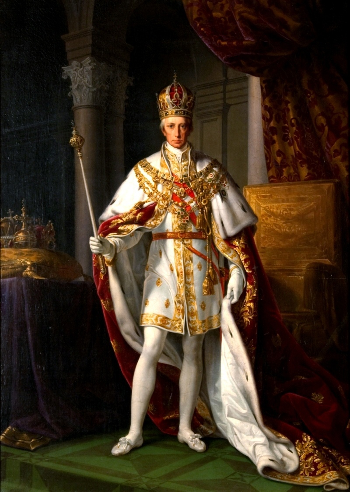
Коронационный портрет Франца II
Возвращаясь к Габсбургам, нельзя не отметить, что Великая Французская революция
окончательно запустила процесс распада Священной Римской империи. Они никак не могли
остановить распространения в Германии революционных идей – французские войска стремились установить «естественные границы» своей страны по Рейну и одновременно несли республиканский дух жителям древних имперских городов Майнца, Кельна, Кайзерслаутерна и
Ахена. Мирные договоры с Пруссией в Базеле, а также с Австрией в Леобене, Кампо-Формио
и Люневиле закрепили господство Франции в Нидерландах, Бельгии, Западной Германии и
Северной Италии. Таким образом, Гогенцоллерны утратили свое былое влияние в германских
государствах и передовые позиции в Священной Римской империи.
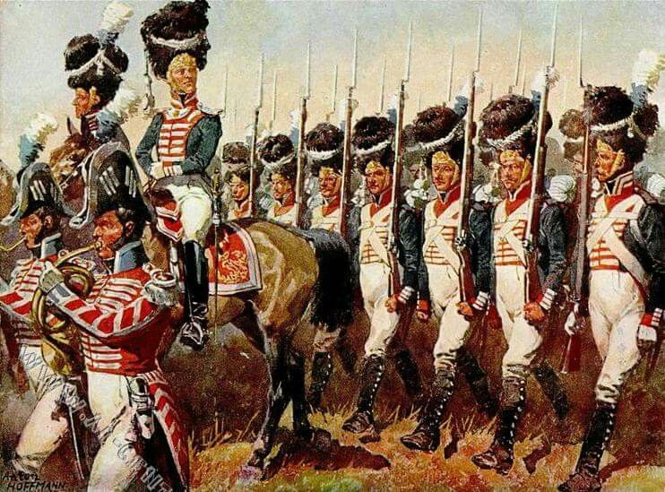
Антон Хоффманн. Баварские гренадеры в 1812 году
Бавария, бывшая давней союзницей Франции, после вторжения в 1795 и 1801 гг. войск
Жана Виктора Моро была вынуждена склониться к союзу с Парижем. Мюнхенские политики
рассчитывали извлечь выгоду из намечавшейся медиатизации Священной Римской империи
и в итоге, в обмен на заключение альянса с Францией, потребовали расширения территории
Баварии за счет ряда соседних епископств. В войне Третьей коалиции Бавария, наряду с Вюртембергом, выступили на стороне Франции, за что после 1805 года получили статус королевств.
Баварии, к тому же, достались новые земли в Тироле и Форарльберге, принадлежавших ранее
Австрии.
Таким образом, к 1805-1806 гг. Германия оказалась для Габсбургов уже фактически
потеряна. Реальная власть здесь принадлежала Наполеону и имперскому эрцканцлеру Карлу
Теодору фон Дальбергу – под их руководством был создан лояльный Франции Рейнский союз,
представлявший собой конфедерацию малых германских государств. Будучи объединенными,
они теперь могли бы гораздо эффективнее, особенно с французской помощью, противостоять Австрии и Пруссии, которых Наполеон стремился отодвинуть на периферию германской
политики.
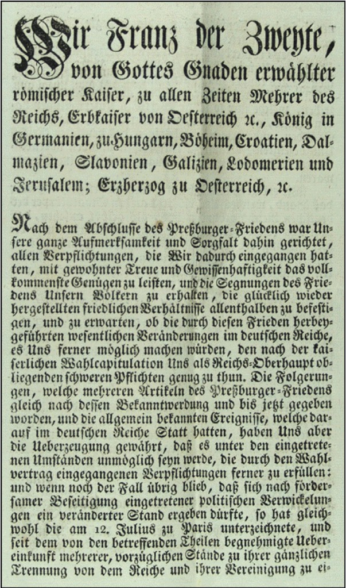
Манифест об отречении от престола Священной Римской империи германской нации императора Франца II от 6 августа 1806 года
6 августа 1806 года состоялось историческое признание Францем II краха Священной
Римской империи германской нации. В этот день он выпустил манифест о роспуске империи,
в котором освободил все сословия и чины от данной ему присяги, а также отрекся от короны
Карла Великого, которую до него германские кайзеры носили без малого тысячу лет. С карты
Европы исчезло последнее государство, сохранявшее почти что средневековое политическое
устройство и, пусть и давно уже номинально, но все же претендовавшее на звание главной
державы западно-христианского мира. Что же касается Пруссии, то ее короли избавились от
титула курфюрстов Бранденбурга, таким образом ликвидировав даже формальную свою подчиненность Габсбургам.
Как Пруссия пришла к катастрофе 1806 года
Пришедший к власти в 1797 году внучатый племянник «старого Фрица» Фридрих Вильгельм III был по своему характеру совершенно не похож на своего легкомысленного отца. Новый
король был религиозным, осторожным и немногословным человеком, его тяготила та роскошь,
к которой прусский двор привык за время правления его отца. По словам Карла фон Клаузевица [34]:
«Фридрих Вильгельм III, с юношеских лет отличавшийся серьезностью и строгостью
своих принципов, слишком недоверчиво относился к собственным силам и силам других людей,
слишком был проникнут тем северным, холодным духом сомнения, который подрывает всякую предприимчивость, охлаждает энтузиазм и затрудняет всякое творчество.»
Фридрих Вильгельм III, король Пруссии в 1797-1840 гг. Портрет неизвестного художника
Новый король начал постепенное омоложение командного состава прусской армии, в
частности пригласил молодого подполковника Герхарда фон Шарнхорста. Вместе с Августом
фон Гнейзенау, Германом фон Бойеном и Кристианом фон Массенбахом Шарнхорст настаивал на введении французской военной системы, на деле показавшей свою эффективность. Все
они предлагали расширить полномочия Генерального штаба – наследника Квартирмейстерской службы -, и превратить его в центральный орган военного планирования прусской армии.
Во внешней политике король старался лавировать между Россией, Британией и Австрией
с одной стороны, и Францией с другой. Наполеон заключил с ним военный союз, уступив взамен Ганновер. Последний был связан личной унией с Британией, но был оккупирован французскими войсками – таким образом, император пытался «вбить клин» в отношения Лондона
и Берлина и оставить Пруссию без сильных союзников, поставить ее в режим дипломатической
изоляции [35]. Русский царь Александр пытался заставить Фридриха Вильгельма примкнуть к
коалиции, угрожая даже в противном случае нападением на Пруссию. Вместе с тем прусский
король не поддался давлению и дал понять Александру, что его страна будет сопротивляться
любому, кто посмеет покушаться на ее нейтралитет [36].
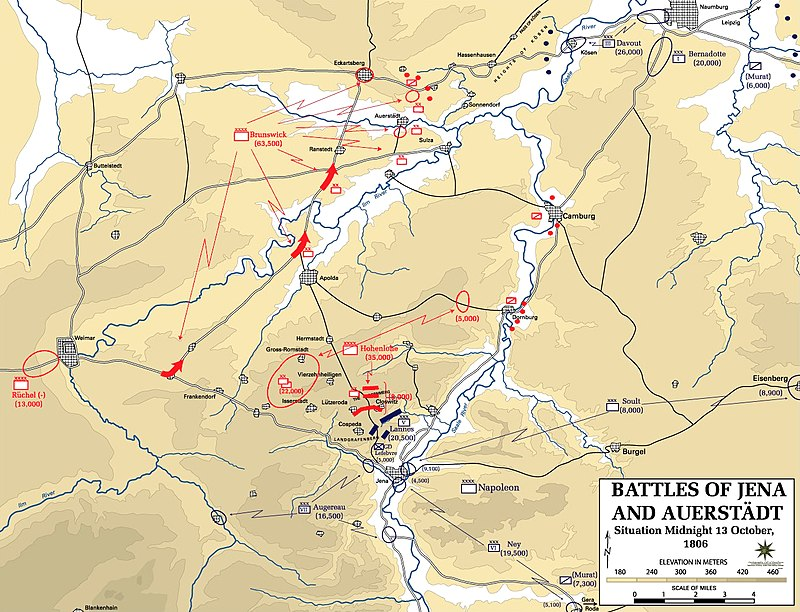
Карта битвы при Йене и Ауэрштедте 14 октября 1806 года
Создание антипрусского по своей направленности Рейнского союза заставило Фридриха
Вильгельма в конце концов начать сближение с противниками Франции. Дальше прусский
король совершил одну из самых своих критических ошибок, предъявив в начале октября 1806
года Наполеону ультиматум с требованием покинуть все германские земли до Рейна. Прусская армия стала готовиться к наступлению на Баварию с целью застать французские корпуса
врасплох и заставить Наполеона отступить за Рейн [37]. Однако его войска сами быстро отрезали
пруссакам пути отхода. Поражение при Заальфельде заставило тех отступать к Веймару и Йене,
генеральное сражение предполагалось дать возле рек Заале и Эльбы. Но французы постоянно
шли вслед за отступающими пруссаками.
Заняв Йену 13 октября, Наполеон на следующий день атаковал позиции ничего не подозревавшего Гогенлоэ. Пруссаки не смогли оказать организованного сопротивления, а фланговая атака Сульта, Ланна и Ожеро заставила их начать паническое бегство. Одновременно Даву
продавил прусскую оборону, возглавляемую королем Фридрихом Вильгельмом, возле Ауэрштедта. Пруссакам не оставалось больше ничего иного, кроме как отступать; при этом пути на
Берлин уже были перекрыты французами [38].
Моральный эффект от поражения оказался столь сильным, что уже к январю 1807 года
Наполеону без сопротивления сдались все оставшиеся прусские крепости. В возможность
сопротивления Франции на тот момент уже не верил никто. По признанию самого Наполеона,
Пруссия сохранила свой суверенитет лишь благодаря заступничеству русского царя Александра I. Вместе с тем на страну была наложена большая контрибуция, а земли, присоединенные по итогам Второго и Третьего разделов Речи Посполитой, были возвращены в состав
Великого герцогства Варшавского – восточного сателлита Французской империи.
Реформы прусской армии
Катастрофа при Йене и Ауэрштедте стала подтверждением духовного кризиса прусского
общества и символом краха прежнего феодально-абсолютистского государства. Война с Наполеоном отличалась от «кабинетных войн» XVIII века тем, что речь в ней шла о выживании нации.
Если в 1760-м Пруссия спаслась во многом за счет противоречий в стане ее противников,
намерения всех великих держав Европы использовать ее в своих интересах, то теперь наполеоновская Франция господствовала в Старом Свете и попирала принципы Вестфальской международной системы. Теперь всем стало ясно, что если Пруссия хочет освободиться от ига,
то она должна это сделать, в первую очередь, своими силами. Война с Наполеоном стала для
пруссаков войной отечественной…
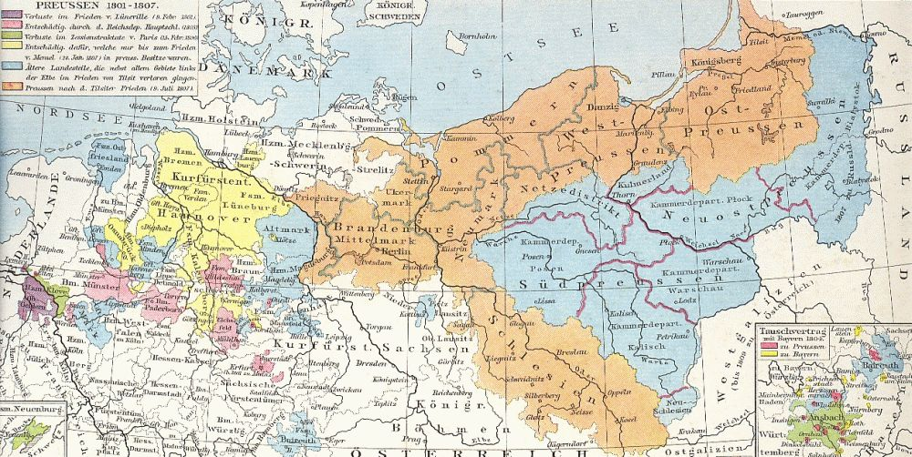
Карта Пруссии после 1806 года, с потерянными землями в Польше и Германии
Реформы коснулись практически всех сфер жизни прусского общества. Начнем наш
обзор с армии. Нельзя не признать, что реформы рейхсвера после проигранной Германией
Первой мировой войны во многом базировались на историческом опыте реформ 1807-1812
гг. В 1807-м, как впоследствии и в 1919-м, Франция наложила ограничение на численность
прусской армии – она должна была составлять не более 40 тыс. человек. Шарнхорст, который
теперь получил все полномочия для проведения военной реформы, принялся создавать многочисленный обученный резерв – проходившие действительную службу солдаты отпускались
сразу же, как только получали сколь-нибудь серьезную боевую подготовку.
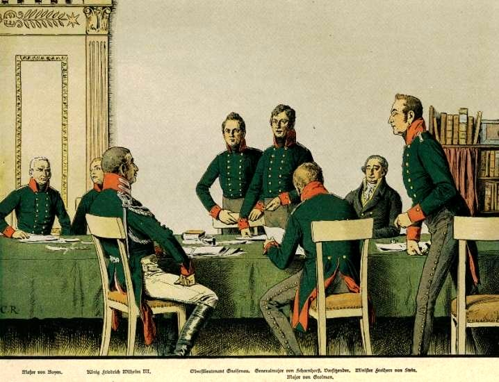
Обсуждение вопросов реорганизации прусской армии. Слева направо: майор фон Бойен, король Фридрих Вильгельм, оберлейтенант Гнейзенау, генерал-майор Шарнхорст, премьер-министр Генрих Фридрих Штейн, майор Карл фон Грольман. Картина Карла Рехлинга
Одновременно в Пруссии шло создание нового Генерального штаба. Шарнхорст учел
опыт Главного штаба Наполеона, чей начальник маршал Бертье фактически занимался лишь
адъютантскими обязанностями, подписывая оперативные распоряжения императора. Деятельность французского Генштаба была целиком и полностью завязана на персоне Наполеона –
пруссаки же хотели создать многофункциональный Генеральный штаб, не столь зависимый от
личности своего начальника.
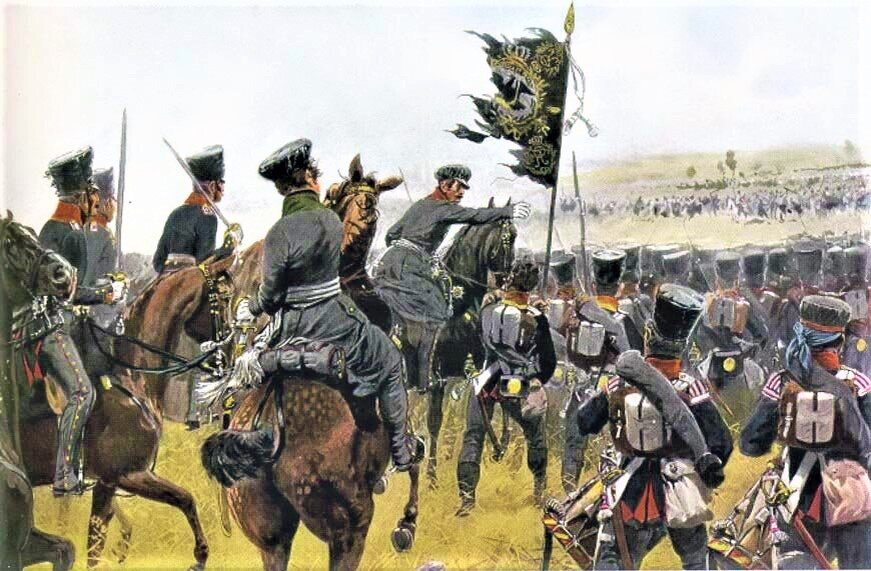
Принц Карл фон Мекленбургский возглавляет атаку прусской кавалерии в сражении при Гольдберге 23 августа 1813 года. Художник Рихард Кнетель
К 1786 году прусская армия, насчитывавшая 195 тысяч человек, на 110 тысяч состояла из
«иностранцев» – в данном случае выходцев из других германских государств. Считалась, что
преимуществом такой армии является то, что устраняется негативное влияние милитаризации
на экономику государства [39]: данная политика позволяла сберегать самих пруссаков, необходимых для пополнения рабочей силы. Собственно, моральный дух и эффективность такой армии
наглядно проявились 20 лет спустя на полях Йены и Ауэрштедта…
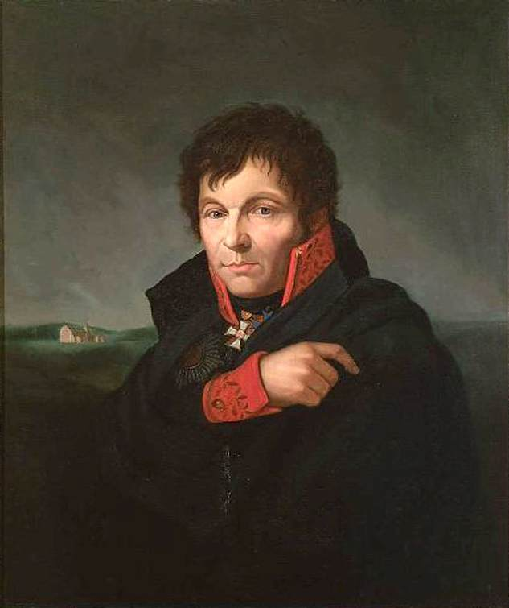
Фридрих Бури. Портрет генерала Герхарда фон Шарнхорста
Основываясь на таком печальном опыте, Шарнхорст стремился к созданию настоящей
народной армии, воюющей не только за Пруссию и короля, но и ценности свободы и равенства. Генерал отменил наказания, унижавшие человеческое достоинство, а также последовательно проводил наполеоновский принцип меритократии – повышения в звании давались
теперь исключительно на основе образования и личных заслуг, а не происхождения или продолжительного пребывания на тех или иных должностях.
Реформы управления и образования. Решение крестьянского вопроса
Два выдающихся политических реформатора Пруссии – Генрих фон Штейн и Карл
Август фон Гарденберг – хоть и действовали в общем направлении и преследовали общие цели,
но имели о них слишком разные представления. Если Штейн боролся против излишней бюрократизации, настаивал на расширении автономии провинций и городов, то Гарденберг напротив стремился к централизации власти. Он проводил свои реформы после Штейна, отправленного Фридрихом Вильгельмом в отставку из-за конфликта того с правительством.
Портрет Генриха Фридриха Штейна кисти Иоганна Кристофа Ринклаке (1804, Музей искусств и истории культуры в Мюнстере)
Генрих фон Штейн добивался того, чтобы министры имели возможность напрямую контактировать с королем, а не через посредников, как это было во времена Фридриха Великого.
Взамен созданной еще Фридрихом Вильгельмом I Генеральной директории были учреждены
новые министерства, а высшим законосовещательным органом страны стал, как и в России,
Государственный совет. В 1808 году Пруссия была разделена на округа, управляемые оберпрезидентами. Тогда же был принят закон, восстановивший самоуправление в городах; правда,
из-за высокого имущественного ценза, решающую роль в нем играли представители буржуазии [40].
Фридрих Георг Вейч. Портрет Карла Августа, князя фон Гарденберга
Не обошлось, само собой, и без социально-экономических реформ. С 1806 по 1810 годы
государственный долг Пруссии вырос с 35 до 66 млн талеров, а обесценивание монетных денег,
усиленный выпуск бумажных ассигнаций и получение новых займов под высокие процентные ставки лишь усугубляли инфляцию [41]. Прусское правительство теперь отстаивало принцип равенства всех перед законом, а также равной для всех, в том числе дворян, обязанности
платить налоги. Уже после победы над Наполеоном, в 1818 году, в Пруссии были отменены
внутренние таможенные барьеры. Наряду с отменой монопольных и цеховых ограничений это
позволило создать в стране режим свободной рыночной конкуренции, что значительно ускорило рост экономики [42].
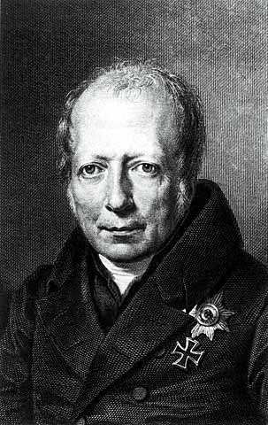
Портрет Вильгельма фон Гумбольдта, реформатора системы образования Пруссии и Германии
После Йенской катастрофы прусская экономика нуждалась в модернизации, для чего
необходимо было создание правового государства и повышение качества образования. Соответствующая реформа проводилась под руководством Вильгельма фон Гумбольдта – брата
известного географа Александра фон Гумбольдта. Как и Кант, он считал, что развитие индивидуальности невозможно при доминировании государственной власти в жизни общества.
Гумбольдт стремился создать либеральную систему образования, рассчитанную не столько на
подготовку узкопрофильных специалистов, сколько на всестороннее воспитание учеников и
студентов.
Усилиями Гумбольдта в Пруссии появились учебные планы, экзамены по окончании обучения, а также обязательные курсы подготовки учителей. Начальное и среднее образование
теперь осуществлялось в народных школах и гимназиях. Для контроля за осуществлением
реформы в 1817-м году было учреждено министерство образования [43].
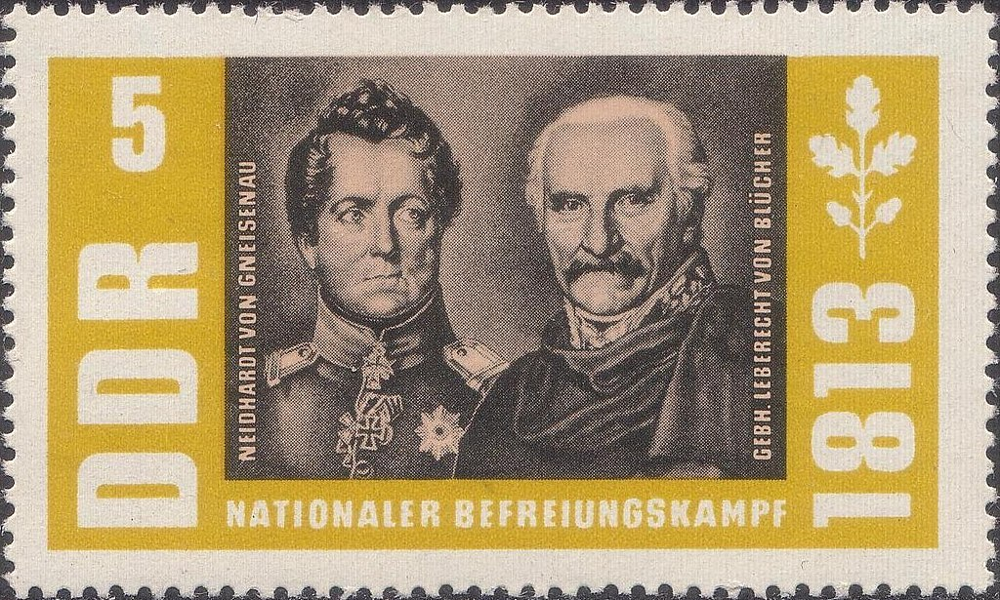
Памятная марка ГДР в честь генералов Гнейзенау и Блюхера
День 9 октября 1807 года в прусской истории сопоставим по своей значимости с днем 19
февраля 1861 года в истории России. В этот день прусское правительство объявило о предоставлении личной свободы государственным и наследственным крестьянам; первые теперь
могли либо сразу, либо же в рассрочку выкупать свои земли. Крестьяне, принадлежавшие
помещикам, на несколько лет получили статус временно обязанных. Ликвидация крестьянских
общин в Пруссии началась сразу же после манифеста об освобождении крестьян [44].
Фактически реформы Штейна, Гарденберга, Шарнхорста и Гумбольдта можно сравнить
с реформами Александра II в 1860-1870-х годах. Что в Пруссии, что в России произошла
попытка замены самодержавно-абсолютистской модели более либеральной системой управления. Нельзя не признать, что реформы проводились вопреки консерватизму Фридриха Вильгельма и политических элит, из-за чего оказались незавершенными. К примеру, прусский
король несколько раз обещал ввести конституцию и местное представительство, однако так
и не сдержал свое слово. Но даже несмотря на все это, проведенные преобразования существенно укрепили Пруссию и позволили ей вновь стать одним из сильнейших германских государств.
Подъем пруссаков на борьбу с оккупантами
Накануне 1806 года Фридрих Вильгельм стремился балансировать между Россией и
Францией, о чем мы уже говорили выше. Имея слабую армию и огромное количество внутренних проблем, Пруссия едва ли теперь могла вести политику с позиции силы. Создание Рейнского союза и последовавшая за прусским ультиматумом Наполеону Йенская катастрофа обозначили поворот внешней политики Пруссии в сторону союза с Россией. Многие прусские
генералы теперь переходили на русскую службу – среди них, в частности, был будущий полный
кавалер Георгиевского креста и русский генерал-фельдмаршал Иван Иванович Дибич-Забалканский, имевший при рождении имя Ханса Карла фон Дибича.
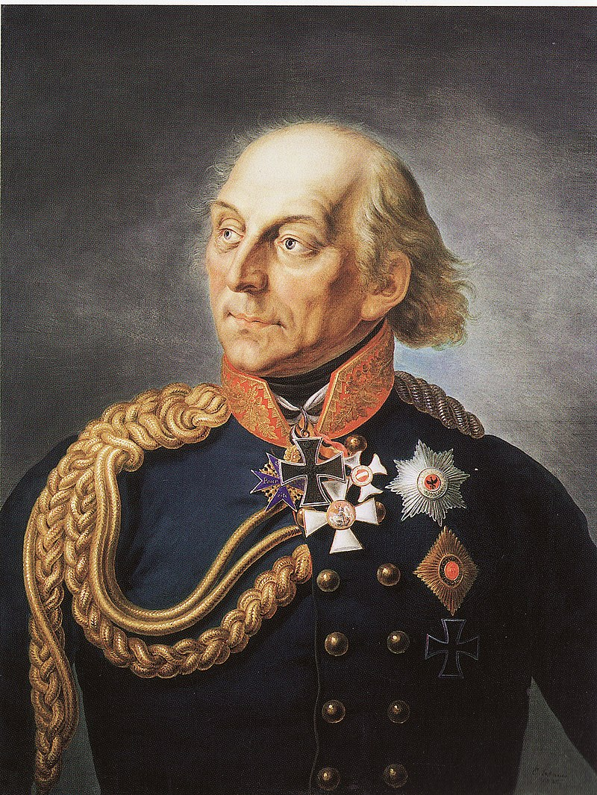
Портрет генерал-фельдмаршала Людвика Йорка фон Вартенбурга
После поражения Великой армии прусский генерал Людвиг Йорк и все тот же русский
генерал Дибич заключили соглашение о взаимном нейтралитете обеих армий. Нейтралитет
должен был соблюдаться вплоть до официального заключения союза России и Пруссии. Узнав
о соглашении, Фридрих Вильгельм направил своего посланника в Париж с официальными
заявлениями, чем желал усыпить бдительность Наполеона. Одновременно он начал переговоры с Веной и Петербургом о формировании новой антифранцузской коалиции.
Переговоры с Россией несколько затянулись из-за вопроса насчет будущего Польши.
Фридрих Вильгельм стремился возвратить те земли, что Наполеон в 1807 году изъял у Пруссии
в пользу Варшавского герцогства. Александр, в свою очередь, намеревался включить земли
Польши в состав России, обещая взамен прусскому королю территориальные компенсации в
Саксонии. В конце февраля 1813 года Россия и Пруссия подписали Калишский договор, после
которого началось формирование союзной армии.
Освящение полковых знамен прусской армии
17 марта Фридрих Вильгельм впервые обратился к своему народу с призывом начать
освободительную борьбу против Наполеона. В тот же день Пруссия, на чьей территории уже
находились союзные русские войска, объявила Франции войну. Через 3 дня текст манифеста
«К моему народу» («An meinem Volk») был распространен по всей стране. В нем король призывал пруссаков к сплочению и борьбе за свободу родины.
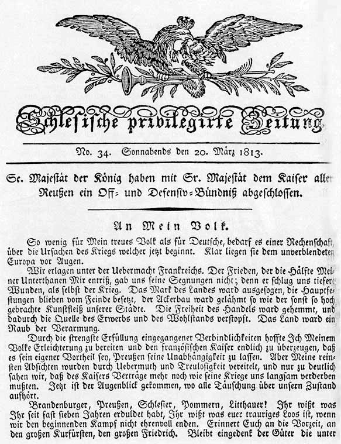
«An meinem Volk» - воззвание короля Фридриха Вильгельма III к прусскому народу 17 марта 1813 года
Чуть раньше, 10 марта, Фридрих Вильгельм учредил в память о своей покойной жене
Луизе Железный крест, по своей форме напоминавший крест Тевтонского ордена. Он стал
первой в прусской истории военной наградой, которая могла вручаться всем военнослужащим
вне зависимости от их званий. Впоследствии Железный крест станет одним из символов прусско-германской государственности, а также украсит копье древнеримской богини Виктории на
квадриге Бранденбургских ворот в Берлине.
Освободительная война и свержение Наполеона
На начальном этапе кампании 1813 года союзные войска потерпели два болезненных
поражения от Наполеона при Лютцене и Бауцене. В битве при Лютцене Шарнхорст, занимавший пост начальника штаба Силезской армии Блюхера, получил тяжелое ранение. Несмотря
на это, он поспешил в Вену для заключения договора с Австрией, но в конце июня 1813 года
скончался от последствий раны. Место Шарнхорста занял его близкий друг и соратник генерал
Август фон Гнейзенау.
В целом стоит признать, что патриотическое движение в 1813 году охватывало лишь саму
Пруссию, что не позволяет говорить об общегерманском восстании против Наполеона. Если в
государствах Рейнского союза жители сохраняли лояльность Франции и боялись прихода прусских войск, то Австрия и вовсе не желала сражаться с Наполеоном. Франц I рассчитывал за
счет противостояния Франции и России поддерживать выгодный Австрии баланс сил в Европе.
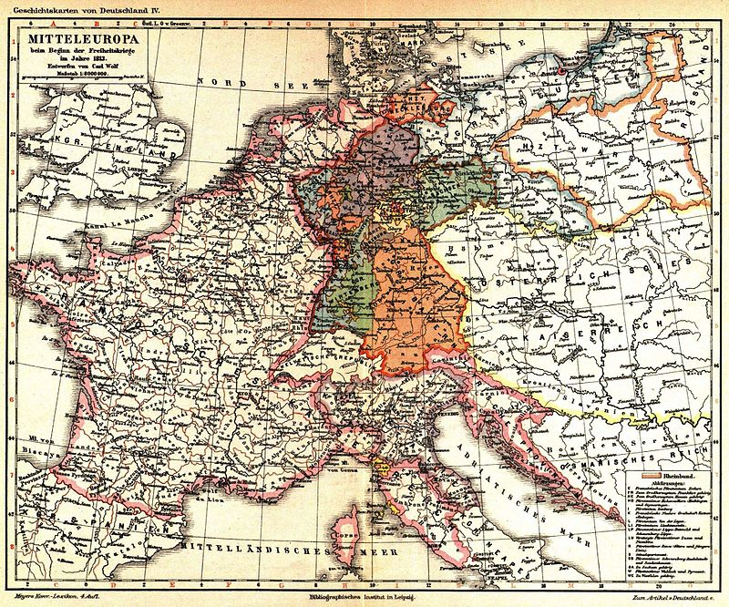
Карта государств Европы, занятых французскими войсками, в 1813 году
В июне 1813-го представители Австрии, Пруссии и России потребовали от Наполеона
отказаться от Варшавского герцогства, вернуть Пруссии Данциг, оставить города Гамбург и
Любек, а также возвратить Австрии Иллирию. В то время как Гарденберг настаивал на том,
чтобы французский император отказался и от протектората над Рейнским союзом, устранившись таким образом от вмешательства в германские дела, Меттерних, желавший как можно
быстрее вывести Австрию из войны, проигнорировал предложение прусского министра [45].
Но несмотря на всю готовность Габсбургов пойти на уступки, нанесенный Наполеону
австрийским канцлером визит закончился ничем – император французов ожидаемо отказался
идти на какие-либо уступки. В итоге Австрия, очень сильно нехотя, но все же присоединилась к антинаполеоновской коалиции. Интересно, что в феврале 1814-го Наполеону был вновь
предложен мир с условием возврата Франции к границам 1792 года и отказа от европейских
завоеваний. Однако тот и слышать не хотел об этом, считая, что его империя должна непременно господствовать над всем континентом [46].
Йенские студенты отправляются на войну с Наполеоном. Картина Фердинанда Ходлера
К августу 1813-го Наполеон успел создать сеть оборонительных пунктов в Саксонии,
рассчитывая таким образом растянуть силы союзников и затем разбить их по частям. 25 числа
те предприняли провальный штурм Дрездена, после чего стали отступать в Богемию. Если бы
корпус Вандама сумел запереть русско-прусско-австрийские войска у Кульма, Наполеон сумел
бы гарантировать себе победу в войне. Однако стойкость русских солдат спасла союзные силы
от поражения. Остаток августа и сентября император провел в бесплодных попытках развить
успех Дрезденского сражения; за это время его армия существенно ослабла.
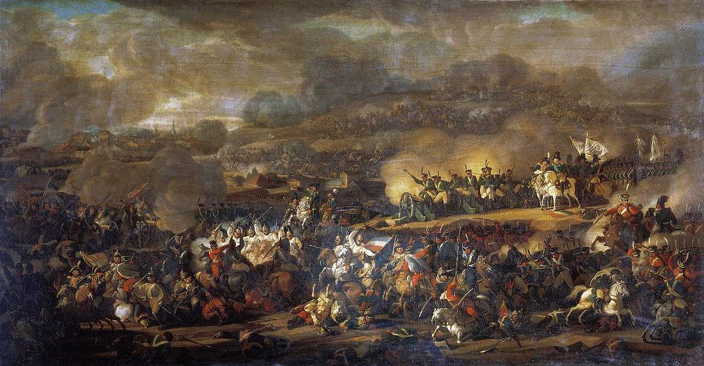
Битва народов при Лейпциге. Картина В. И. Мошкова
После поражения в битве при Лейпциге, известной также как Битва народов, Наполеон
был вынужден оставить Германию и отступить за Рейн. Только теперь государства Рейнского
союза решились разорвать союз с Францией и присоединиться к коалиции – они справедливо
опасались того, что по окончании войны могут потерять свои территории и даже суверенитет.
Император, что интересно, так и не призвал французов вступать в ополчение. Да и те, судя по
всему, уже успели устать от бесконечных войн, которые Франция вела уже почти 22 года.
С другой стороны, в кампании 1814 года Наполеон, по сути, не потерпел ни одного поражения. Более того, своими победами он едва не заставил союзные войска в панике отступать за
Рейн. Однако имея ограниченные силы, император не мог защитить Париж, чем в итоге коалиция и воспользовалась. 31 марта 1814 года прусские, русские и австрийские солдаты вошли в столицу Франции. Узнав о потере Парижа, Наполеон уже было двинулся освобождать его,
но собственные маршалы стали убеждать Бонапарта в бесполезности дальнейшего сопротивления.
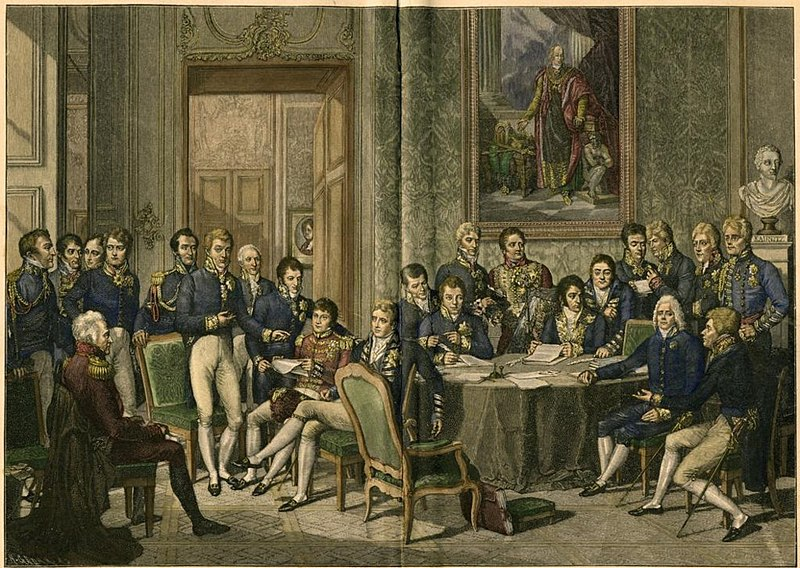
Венский конгресс. Картина Жан-Батиста Изабе.
Подписав отречение, Наполеон отправился по воле держав-победительниц на остров
Эльба, но в 1815-м вновь вернулся во Францию и бескровно возвратил себе власть. Непопулярные Бурбоны бежали из страны, но, как оказалось, и сам Бонапарт был уже совсем не так
силен, как раньше. Разумеется, на него ополчились все соседние страны, прежде всего Британия и Пруссия. Битва у Линьи стала последней победой Наполеона – прусские же войска, в
свою очередь, едва не оказались на грани уничтожения. Однако во время сражения при Ватерлоо солдаты Блюхера сумели отвлечь силы Груши, которые были нужны императору на главном участке фронта. Последовавшая затем фланговая атака Блюхера стала решающей в разгроме французов. Наполеон был вновь арестован и направлен на остров Святой Елены, где и
скончался 5 мая 1821 года.
Известным выражением времен Венского конгресса была поговорка, приведем ее укороченную версию: «русский царь любит за всех, австрийский император платит за всех, прусский король думает за всех». И ведь было о чем думать: на кону стояли судьба всей Германии,
которая с 1806 года даже формально не была единым государством, а также будущее Пруссии
в ее новой политической структуре.
Ни Британия, ни Россия, ни Франция не были заинтересованы в том, чтобы воссоединять
страну, чья раздробленность веками влияла на всю европейскую политику. Германия считалась
буферной зоной между великими державами: эту же роль они отводили ей и теперь. Оставалось
только определиться с тем, какое эта конфедерация будет иметь название.
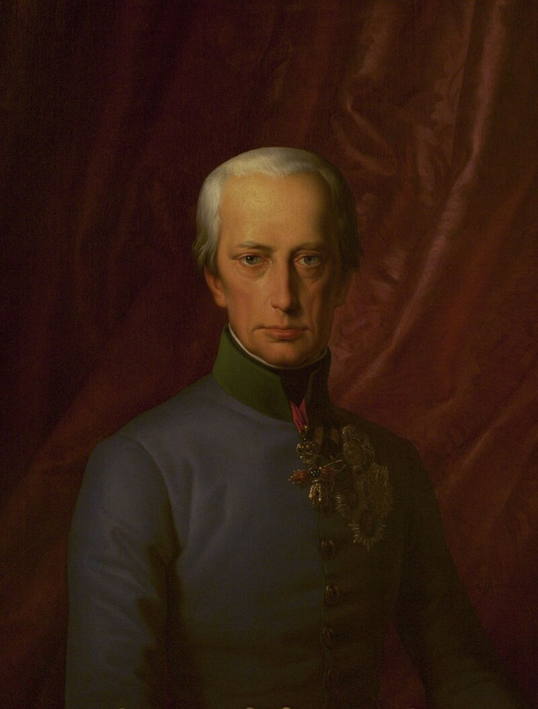
Леопольд Купельвейзер. Портрет Франца I, императора Австрии
Восстановление Священной Римской империи все посчитали бессмысленным шагом. Да,
законность самой процедуры ее ликвидации в августе 1806 года вызывала и до сих пор вызывает среди историков споры и дискуссии. Однако, как бы то ни было, роспуск империи Францем II стал лишь формальным свидетельством ее давнего падения, о чем мы говорили выше.
Реалии политики XIX века уже не предполагали борьбу европейских держав за звание преемницы Римской империи, да и владение Вечным городом никак не позволяло рассчитывать на
господство во всей Европе. С другой стороны, Германия уже никак не могла претендовать на
лидерство в христианском мире, давно уже успевшем расколоться на католичество, православие и протестантизм.
Габсбурги, что также интересно, не проявили большого желания к восстановлению империи, чей трон они занимали практически более трех столетий. Когда Франц I создавал в 1804
году Австрийскую империю, он в первую очередь заботился об укреплении и централизации
наследственных земель Габсбургов. Его влияние в Германии, что называется, таяло на глазах, а
австрийский эрцгерцог едва ли мог бы пользоваться таким же авторитетом в Чехии, Хорватии,
Галиции и Венгрии как, например, император.
Расширение империи Габсбургов в 1525-1795 гг.
Несмотря на это, полностью игнорировать германские дела Вена не собиралась. Своими
задачами она видела предотвращение роста влияния Баварии и Пруссии, а также борьбу с либеральным национализмом. Габсбурги понимали, что рост пангерманизма спровоцирует аналогичное движение в Венгрии, а отделение последней, в свою очередь, приведет к окончательному падению Австрии как империи. В итоге собравшиеся в Вене дипломаты договорились о
создании Германского союза. Австрийскому императору отводилась в нем роль председателя,
своего рода «первого среди равных». Второй сильнейшей германской державой становилась
Пруссия, наряду с Австрией имевшая наибольшее число голосов в Бундестаге.
Саксония – четвертая держава Германского союза после Австрии, Пруссии и Баварии –
за свою поддержку Наполеона поплатилась территориями: 40 % ее земель отошли в 1815 г.
к Пруссии. Одно время речь шла даже о полном вхождении королевства в состав последней,
однако заступничество Талейрана позволило Саксонии сохранить суверенитет. Чуть позже
Британия и Австрия предложили Пруссии полностью оккупировать территорию Саксонии, в
обмен на что та должна была воспрепятствовать русской оккупации Польши – то есть, фактически, предать Россию.
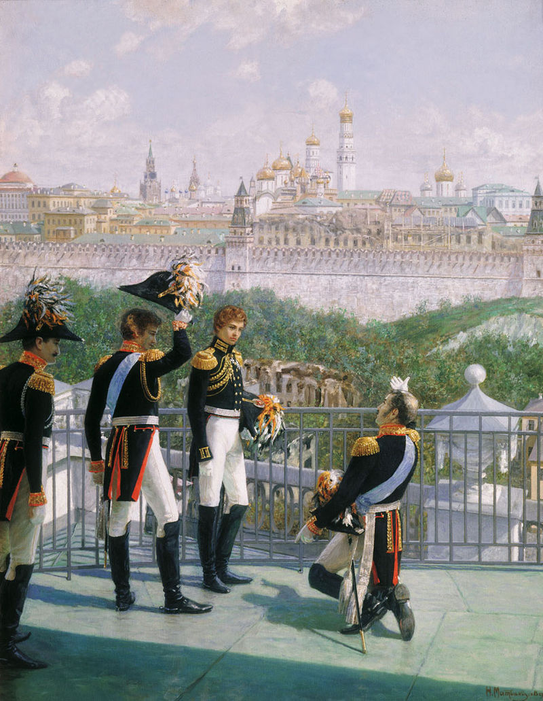
Н.М. Матвеев. «Король Прусский Фридрих Вильгельм III с сыновьями благодарит Москву за спасение его государства», 1896 год.
Хорошенько поразмыслив, Фридрих Вильгельм решил этого не делать. Он справедливо
опасался того, что бывший министр Наполеона Талейран, внезапно ставший сторонником
европейского легитимизма, вместе с Россией поставит Пруссию в положение дипломатической
изоляции [47]. Перспектива войны на два фронта с Францией и Россией, как видно, пугала Гогенцоллернов еще в 1814-м.
Прусские земли в Польше и Восточной Пруссии остались за формальными границами
Германского союза. С другой стороны, страна получила территории бывших рейнских государств, в частности архиепископств Кельна и Трира. Рейнланд стал важным центром прусской
промышленности, однако его территория была отделена от Пруссии землями других мелких
государств Германского союза. Необходимость преодоления этой чересполосицы и установления сухопутного сообщения с Рейнской областью станет вскоре одной из главных целей внешней политики Пруссии.
Священный союз
Священный союз, сформированный по инициативе русского царя Александра I, виделся
прусскому и австрийскому монархам скорее как инструмент влияния России на дела Германии
и Восточной Европы, чем следствие христианского мистицизма Александра, потому они изначально восприняли идею его создания в высшей степени скептически. Союз был крайне консервативным по своей направленности и имел целью предотвращать революционные выступления в любом уголке Европы – таким образом, его члены стремились защищать стабильность
Венской международной системы.
Священный союз: Александр I, Франц I и Фридрих Вильгельм III.
Если сначала Священный союз создавался как блок исключительно восточноевропейских государств, то позднее к нему присоединились все великие державы Европы. Не вошли
в его состав только Турция и Рим, а также Британия, которая традиционно предпочитала себя
не связывать никакими договорами. Принцип легитимизма, выдвинутый Талейраном и Меттернихом [48], мог бы связать британскую политику, направленную на поддержку национального
движения в Польше. С его помощью Лондон пытался отодвинуть границы России от Центральной Европы. Ради осуществления данной цели Британия заключила партнерство с Испанией,
Португалией и Францией. С принятием, кстати говоря, последней по итогам Ахенского конгресса 1818 года в Священный союз, в Европе была восстановлена «пентархия» великих держав, управлявшая политикой континента в предыдущем XVIII столетии [49].
Что касается того же польского вопроса, то Пруссия и Австрия без восторга восприняли
желание Александра учредить для Царства Польского свою конституцию. По мнению Берлина
и Вены, наличие конституции в русской Польше вызвало бы волнения в австрийской Галиции
и в польских землях Пруссии, которая вела особенно жесткий курс германизации и преследования поляков. Другими словами, Франц I и Фридрих Вильгельм III боялись того, что Россия получит в лице более либерального Царства Польского рычаг политического давления на
Австрию и Пруссию соответственно [50].

.jpg)


,_RP-P-1999-1006.jpg)